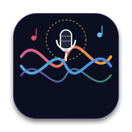

CantatePresenter
Prezenter pieśni i słowa dla parafii i wspólnot
CantatePresenter to bezpłatny program na Maca (Apple Silicon, macOS 14+) do wyświetlania tekstów pieśni na projektorze albo drugim ekranie podczas nabożeństw. Ma też prywatną wersję webową, którą parafia uruchamia na własnym serwerze.
- biblioteka pieśni z wyszukiwaniem, plany nabożeństw, tekst dopasowany do ekranu,
- chwyty i transpozycja, ekran dla muzyków, pilot ze smartfona,
- import z Holyrics, CCLI SongSelect i Wikiźródeł, informacja o prawach autorskich i raport CCLI,
- kopie zapasowe na dysku albo na Dysku Google użytkownika.
Dysk Google
Logowanie przez Google jest opcjonalne i służy wyłącznie do zapisywania kopii zapasowych biblioteki w folderze
na Dysku Google zalogowanego użytkownika. Program ma dostęp tylko do plików, które sam utworzył (zakres
drive.file), i odczytuje adres e-mail konta, żeby pokazać, na którym koncie zapisuje kopie.
Szczegóły: polityka prywatności.